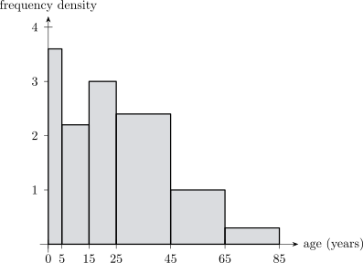

7.4 Quadratic Functions
A function of the form \(f(x)=ax^{2}+bx+c\), where \(a\), \(b\) and \(c\) are constants with \(a\neq 0\), is called a quadratic function. Being a
polynomial, it involves no division and no roots, so nothing can go wrong for any input and it is
defined for every real number.
Thus, the domain of a quadratic function is \(\mathbb {R}\), the whole set of real numbers.
Most of the properties of quadratic function can be revealed if we complete the square. Completing
the square we have \begin {align*} f(x) & = ax^2+bx+c\\ & = a\bigg \{x^2+\frac {b}{a}x+\frac {c}{a}\bigg \}\\ & = a\bigg \{x^2+\frac {b}{a}x+\bigg (\frac {b}{2a}\bigg )^2-\bigg (\frac {b}{2a}\bigg )^2+\frac {c}{a}\bigg \}\\ & = a\bigg \{\bigg (x+\frac {b}{2a}\bigg )^2-\frac {b^2}{4a^2}+\frac {c}{a}\bigg \}\\\\ \implies \hspace {0.5cm} f(x) & = a\bigg \{\bigg (x+\frac {b}{2a}\bigg )^2+\frac {4ac-b^2}{4a^2}\bigg \}\\ \end {align*}
Multiplying by \(a\), we obtain the completed-square or vertex form \[f(x)=a\bigg (x+\frac {b}{2a}\bigg )^2+\frac {4ac-b^2}{4a}\]
Note 7.14. This one line contains most of what there is to know about a quadratic, because \(x\) now appears only once, inside a square.
A square is never negative, so the bracket contributes its least possible value, zero, exactly when \(x=-\dfrac {b}{2a}\). Therefore \[\text {if } a>0:\ f \text { has a minimum at } x=-\frac {b}{2a},\hspace {0.6cm} \text {if } a<0:\ f \text { has a maximum there,}\] and the value at that point is \(\dfrac {4ac-b^{2}}{4a}=-\dfrac {D}{4a}\). The point \[\left (-\frac {b}{2a},\ -\frac {D}{4a}\right )\] is the vertex, and the vertical line through it is the axis of symmetry — so the parabola is a mirror image about \(x=-\frac {b}{2a}\), which is also the midpoint of the two roots, being the average \(\frac {\alpha +\beta }{2}=-\frac {b}{2a}\).
The discriminant reappears here too. The vertex height is \(-\frac {D}{4a}\), so for \(a>0\) the lowest point of the curve is above the axis exactly when \(D<0\) — which is precisely the case with no real roots. The algebra and the picture are the same statement.
Now, let \(p=\dfrac {b}{2a}\) and \(q=\dfrac {4ac-b^2}{4a}\). Then every quadratic function can be expressed in the form
\[f(x)=a(x+p)^2+q\]
where \(a,\) \(p\) and \(q\) are real numbers.
Solution.
- 1.
- So \(a=2\), \(b=-12\) and \(c=23\)
\(\implies p=\dfrac {b}{2a}=\dfrac {-12}{2(2)}=\dfrac {-12}{4}=-3\)
\(\implies q=\dfrac {4ac-b^2}{4a}=\dfrac {4(2)(23)-(-12)^2}{4(2)}=\dfrac {184-144}{8}=\dfrac {40}{8}=5\)
- 2.
- So, this one lets us complete the square \begin {align*} g(x) & = 1-6x-x^2\\ & = -x^2-6x+1\\ & = -1\{x^2+6x-1\}\\ & = -1\{x^2+6x+(3)^2-(3)^2-1\}\\ & = -1\{(x+3)^2-9-1\}\\ & = -1\{(x+3)^2-10\}\\\\ \implies g(x) & = -(x+3)^2+10\\ \end {align*}
Express \(f(x)=x^2-2x+3\) in the form \(f(x)=a(x+p)^2+q\). \begin {align*} f(x) & = x^2-2x+3\\ & = x^2-2x+(1)^2-(1)^2+3\\ & = (x-1)^2-1+3\\\\ \implies f(x) & = (x-1)^2+2 \end {align*}
It has the line of symmetry at \(x-1=0\implies x=1\)
In general, for any quadratic function \(f(x)=ax^2+bx+c=a(x+p)^2+q\) where \(p=\dfrac {b}{2a}\) and \(q=\dfrac {4ac-b^2}{4a}\)
- 1.
- The graph of \(f(x)=ax^2+bx+c\) is symmetric about the line \(x=-p=\dfrac {-b}{2a}\) \(\text {i.e}\hspace {0.3cm} x=\dfrac {-b}{2a}\)
- 2.
- If \(a>0\), then the graph opens upwards and \(f(x)\) has minimum value \(q=\dfrac {4ac-b^2}{4a}\) when \(x=\dfrac {-b}{2a}\)
Function has a minimum point \[(-p,q)=\bigg (\dfrac {-b}{2a},\dfrac {4ac-b^2}{4a}\bigg )\]

- 3.
- If \(a<0\), then the graph opens downwards and \(f(x)\) has a maximum value
\(q=\dfrac {4ac-b^2}{4a}\) when \(x=\dfrac {-b}{2a}\)
maximum point \((-p,q)=\bigg (\dfrac {-b}{2a},\dfrac {4ac-b^2}{4a}\bigg )\)
To sketch the graph of a quadratic function
- 1.
- Find the \(y-\)intercept
- 2.
- Find the line of symmetry \(x=\dfrac {-b}{2a}\)
- 3.
- Find either the maximum or the minimum value \(\dfrac {4ac-b^2}{4a}\)
- 4.
- Determine whether the graph opens upwards \(\bigcup \) \(a>0\) or if it opens downwards \(\bigcap \) if \(a<0\).
- (a)
- on the graph itself show the \(y-\) intercept.
- (b)
- the maximum or minimum point.
- (c)
- if the graph crosses the \(x\)-axis at a rational point indicate them.
Solution.
- 1.
- when \(x=0\), \(f(0)=-7+12(0)-3(0)^2=-7\).
The graph crosses the \(y-\)axis at \((0,-7)\) - 2.
- Note that \(f(x)=-3x^2+12x-7\) since \(a=-3<0\) then the graph opens downwards. Hence it has maximum.
Note again that \(f(x)=-3(x-2)^2+5\) - 3.
- The line of symmetry is \(x=2\)
- 4.
- Maximum value is 5
- 5.
- The maximum point is \((2,5)\).

Let \(g(x)=ax^2-x+1\) be a quadratic function. Given that the minimum value of \(g\) is \(\dfrac {7}{8}\)
- 1.
- Find the value of \(a\).
- 2.
- Sketch the graph of \(g(x)\).
- 3.
- Solve the equation \(g(x)=2x+6\).
Solution.
- 1.
- Minimum value is \(\dfrac {4ac-b^2}{4a}\). Now, \(b=-1\) and \(c=1\) \begin {align*} \frac {4a(1)-(-1)^2}{4a} & =\frac {7}{8}\implies \frac {4a-1}{4a}=\frac {7}{8}\\\\ \implies 8(4a-1) & = 7(4a)\\ \implies 32a-8 & = 28a\\ \implies 32a-28a & = 8\\ \implies 4a & = 8\\\\ \implies a & =2 \end {align*}
- 2.
-
- (a)
- \(y-\)intercept \(g(0)=1\).
- (b)
- \(a>0\) \(g(x)\) opens upwards.
- (c)
- minimum value is \(\dfrac {7}{8}\).
- (d)
- line of symmetry \(x=\dfrac {-b}{2a}\) is \(x=\dfrac {1}{4}\)
- 3.
- \(g(x)=2x+6\) \begin {align*} \implies 2x^2-x+1 & = 2x+6\\ 2x^2-3x-5 & =0\\ 2x^2+2x-5x-5 & =0\\ 2x(x+1)-5(x+1) & = 0\\ \implies (2x-5)(x+1) & = 0\\\\ \text {Thus}\hspace {0.3cm} 2x-5=0\hspace {0.3cm} &\text {or}\hspace {0.3cm} x+1=0\\ \end {align*}
Hence \(x=\dfrac {5}{2}\) or \(x=-1\)
A farmer has 320 meters of fencing wire. He wants to enclose a rectangular garden one side of which is a river. Find the dimensions of the maximum area possible he can fence if he does not need to fence on the side where there is a river.

Area \(=xy\)
Length of wire \(=x+y+x\implies y+2x=320\).
Thus, \(y=320-2x\)
\begin {align*} \text {Area} & = x(320-2x)\\ \implies A(x) & = 320-2x^2\\ & = -2\{x^2-160x\}\\ & = -2\{(x-80)^2-(80)^2\}\\ & = -2\{(x-80)^2-6400\}\\ & = -2(x-80)^2+12800 \end {align*}
Hence, the dimensions of maximum area \(x=80\) and \(y=12800\).
Questions on this section
Stuck on something here? Ask below and it stays attached to this topic.